In the circuit below, the voltage source is
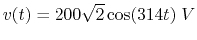,
and 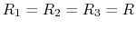, 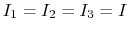 (rms value), 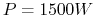. Find  , 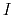,
, 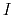,
 and
and  .
.

In the circuit below, 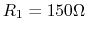,  , 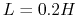, 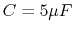.
The input voltage is
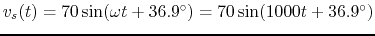.
The system is in steady state before the switch is closed at
, 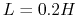, 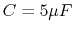.
The input voltage is
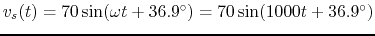.
The system is in steady state before the switch is closed at  . Find voltage
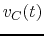 across
. Find voltage
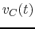 across  and current
and current  through
through  for 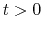.
for 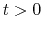.